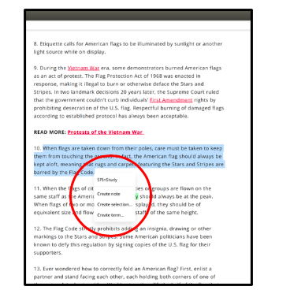
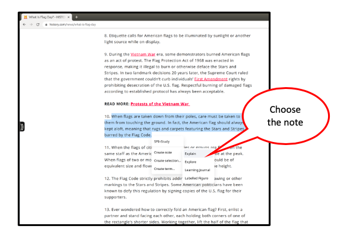
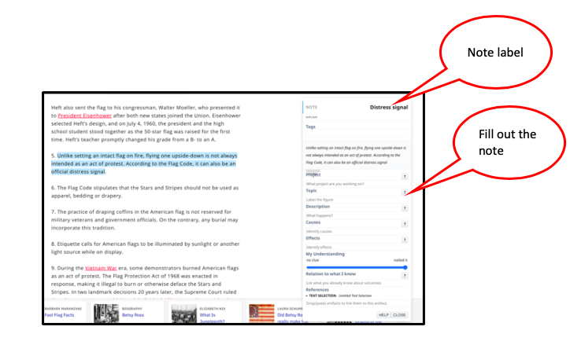
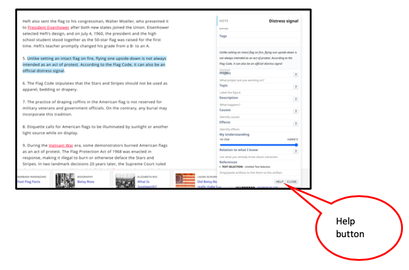
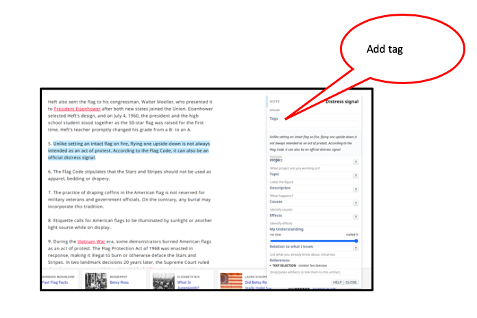

To create a note in nStudy:
- You can start to make a note by selecting text or just right clicking
- A popup menu will appear. Click on "Create Note"

- A popup menu will appear with kinds of notes you can choose. Click on the kind of note you want to create

- A note window will open. Label your note to give it a title, then fill in the rest of the information in text boxes

- If you need help filling out a note or a part of it, click the help button

- You can add a tag to your note, for example, "important" or “to be reviewed”
